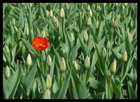

| Syntax |
Result |
Comment |
| https://jenyay.net/uploads/Soft/Outwiker/small_image.jpg |
 |
Insert image from webpage |
| Attach:small_image.jpg |
|
Insert image from attached file |
| [[http://jenyay.net | Attach:small_image.jpg]] |
|
Insert link to webpage as image |
| [[/Page Types/Wiki Page/Attachments and Pictures | Attach:small_image.jpg]] |
|
Insert link to note as image |
| %thumb%Attach:image.jpg%% |
|
Insert link to attached image as thumbnail.
Thumbnails are stored in the "__thumb" subdirectory of the attachments directory |
| %width=200%Attach:image.jpg%% |
 |
Insert link to attached image as thumbnail with specified width.
Command variants:
%width=200px%Attach:image.jpg%%
or
%thumb width=200%Attach:image.jpg%%
Thumbnails are created in the "__thumb" subdirectory of the attachments directory |
| %height=200%Attach:image.jpg%% |
|
Insert link to attached image as thumbnail with specified height
Command variants:
%height=200px%Attach:image.jpg%%
or
%thumb height=200%Attach:image.jpg%%
Thumbnails are stored in the "__thumb" subdirectory of the attachments directory |
| %maxsize=200%Attach:image.jpg%% |
 |
Insert link to attached image as thumbnail with specified max size.
Command variants:
%maxsize=200px%Attach:image.jpg%%
or
%thumb maxsize=200%Attach:image.jpg%%
Thumbnails are stored in the "__thumb" subdirectory of the attachments directory |
| Syntax |
Result |
Comment |
| Attach:file.txt |
file.txt |
Link to attached file |
| [[Attach:file.txt]] |
file.txt |
Link to attached file.
Same as the previous variant. |
| Attach:"subdir/file_in_subdir.txt" |
subdir/file_in_subdir.txt |
Link to attached file in subfolder |
| [[Attach:small_image.jpg]] |
small_image.jpg |
Link to attached image |
| [[Attach:file.txt | Attached file]] |
Attached file |
Link to attached file with comment |
| [[Attached file -> Attach:file.txt]] |
Attached file |
Link to attached file with comment
Same as the previous variant. |
| [[Attach:"subdir/file_in_subdir.txt" | Attached file]] |
Attached file |
Link to attached file in subfolder with comment |
| [[Attached file -> Attach:"subdir/file_in_subdir.txt"]] |
Attached file |
Link to attached file in subfolder with comment.
Same as the previous variant. |

{kind=link}